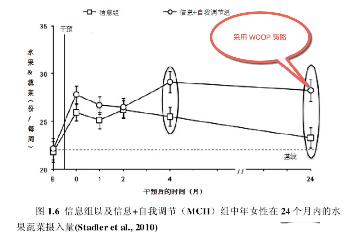
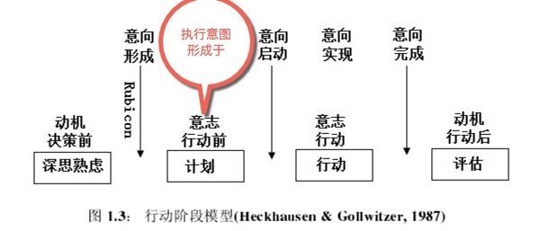
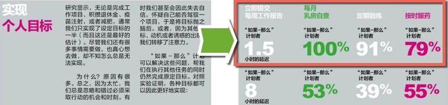
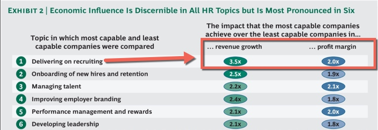
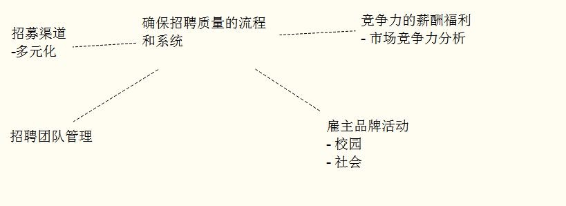

开放式招聘系列（二）：招聘班底的速成
本文主要讲的是出类拔萃的招聘人员行为速成——行为培养。
招聘行为养成
开放式招聘系列第一篇里，我们提到了出类拔萃的招聘人员日常会做以下的行为：
- 他们快速、持续、自我驱动地学习
- 他们深入理解企业业务
- 他们关注招聘质量，完成招聘后跟踪分析入职表现和满意度
- 他们能有效说服用人部门面试官，并有效合作
- 他们善于把握招聘优先次序，关注重点岗位和候选人
- 他们优先搜寻被动求职者
- 他们聚焦于与候选人建立信任关系
- 他们主动建立个人的人才管道
- 他们有特别的人才来源、渠道
招聘班底上，我们暂时不讨论人员的分工，我们先来讲人员基本功的练习和养成。
上面的行为，实质上就是一些规范的动作，如同武术里的套路。
（一些更基本的本篇未包括进来，比如简历筛选、这一类工作慢慢由电脑程序取代。）
我们的目标是：练习规范动作，得到反馈。坚持动作练习，得到行为习惯。
有没有最好的方法呢？我不清楚，我倒是知道时间宝贵。并且我们还知道，管理大师詹姆斯.马奇 提过学习在三个学习做什么、如何做以及学习期盼什么三个层面同时发生。
因为学习在这三个层面同步进行。所以寻求最佳选项很难找到，三个层面的适应会相互干扰。
所以不用纠结于是否是最好的方法，再多的方法，不如动起来。
其实不论是任何行动，我们人类即希望能找到最好的方法，又希望能尽快达成。然而事实往往不会如此。
因为想法再好，以下因素还会使我们发生行为瘫痪
或者高估了自我改变带来的收益；或是认知资源投入不足；目标意愿不强大；或者高估了自己的能力与改变自我的速度；
或者采取了错误的策略：总是在自我改变的初期投入过多资源，热情满满，在艰难的低谷期，却资源严重不足。
那么如何能尽早行动起来？
我们今天要用到一个不需要改变认知方式的工具，来帮助我们养成新的行为。
用 woop 来养成好行为
WOOP 是一个对目标追寻更加有效的自我调节策略。
WOOP，是德国汉堡大学心理学家彼得 · 戈尔维策（Peter Gollwitzer）和 他的妻子加布里埃尔 • 厄廷根（Gabriele Oettingen ） 美国纽约大学及德国汉堡大学心理学教授, 的共同“作品”， 心理对照与执行意图联合起来，帮助人们实现目标。
当初厄廷根教授为了便于推广这个策略，起了个简单易记忆的新名——WOOP.
主要有两个心理工具构成：
【心理对照】，帮助个体承诺于高期望的目标，放弃低期望的目标，聚焦个人资源。
【执行意图】能帮助解决目标努力过程中的意志问题，缩小目标意向和实际行动中的鸿沟。减少行动瘫痪。
心理对照和执行意图分别作为目标设定和目标执行阶段的自我调节策略，能有效地帮助个体更成功地实现目标（Oettingen 2013）.
应用在招聘行为的培养方面，自然也会帮助我们去启动行为。
WOOP 示例
具体的步骤可以参考我前面的一篇文章
之前我们提到 优先利润产出部门、岗位的招聘能够增进企业收入，同时它也是最有效同时也是最小成本的招聘策略。
所以，我们的目标自然是最先要重视这块意识和行为的培养，如何做呢，WOOP 如何 助力呢？
粗略可见到：
愿望/目标（Wish） : 他们把握招聘优先次序，关注重点岗位和候选人;
成果（Outcome）： 重点岗位人员快速到位，适应团队，进入工作状态；
障碍 （Obstacle）： 不知道优先次序
计划 （Plan） ： 了解公司的收入模式 收入节点；
那么物化后就是一个执行意图：
如果拿到招聘任务时，我不知道该招聘空缺的优先次序，那么就整理一份公司的收入是如何来的业务流程资料在内部分享。
再比如 当我方结束新岗位招聘的时候，我们会跟进岗位人员的适应情况，既通过新人的眼睛来看公司，也需要上级的眼睛；
一起来提高招聘的投入、研究；一提高招聘的质量；以备下一轮改进。
这里的障碍是：用人领导不愿意反馈？ 还是新人不愿意说，怕说错？……
套入「如果……那么……」
通过以上的分析，提醒自己当。。。情境时。。。可以做什么。。。
如果实践了，遇到了困难，我乐意和大家探讨。
小结
基本动作的练习就是基本功扎实与否的一个体现。
一个团队里知道如何让自己的各个成员的基本功都扎实了，我们的班底就好扩大了；
（预告：下一篇 开放式招聘系列（三），我们来聊聊全员招聘）
# 欢迎联系与探讨 ，Arvin Yu 邮箱：yuyandong@outlook.com #
本作品采用 知识共享署名-非商业性使用-禁止演绎 3.0 Unported许可协议 进行许可。

开放式招聘系列（番外篇）：如何有效说服用人部门面试官，并有效合作
前几日我在 开放式招聘系列(一)中提到，类拔萃的招聘人员他们主要的行为表现：
比如
他们能有效说服用人部门面试官，并有效合作
今天我简单讲下这点，有的会稍微超出招聘人员的职责范围，我先略过。
下面的几点建议，其实都是从基本的地方开始的。
实质就是围绕下面这点来谈。
他们深入理解企业业务
在建立合作关系方面
当他们主动找过来的时候，我们要能提供建议
部门人员配置部分。。。。
总监们会来咨询HR 的政策，因为大部分时候这些不是他们关心的重点，当问题出现的时候他们会想到HR , 想起HR 能提供建议，比如 用人的建议。
而变动大的部门，比如新总监到岗后要凝聚团队，他会用多种方式：比如手下员工涨工资、下属升职、增加人员编制。 会频频找到HR。
。。对应情境下。。
。。如何建议呢。。。
我们来看3点：
1） 。。。
2） 。。。
3） 。。。
当他们没有主动找过的时候，我们要给出易用、有效的工具；
面试/用人决策的部分。。。。
其中之一：
我在北海吃到的一种最舒服的鱼，它刺少 （海鱼大部分鱼刺比较大，细的刺很少——大的确定的缺点就如同你看得见的大刺，小的没有），我以前吃得比较多是鱼刺细且多。而这种鱼 没有细的刺，居然不用剔刺。到嘴里不用折腾，畅快地一口吃到肚子里。虽然肉质没有淡水鱼那么嫩滑润。 但是畅快地吃，不用担心鱼刺卡喉。
用人是否也可以畅快地用呢？
你不想吃到多的鱼刺，用人部门也不想。道理就这么简单。有效的应用方法是什么呢？
我们来回忆下，我们都吃过鱼刺的亏，大部分直线经理也吃过手下不好用的亏，就像我吃过多刺的鱼肉的亏一样，那种感觉不好受。
不放心的感觉就如同害怕鱼刺卡在喉咙里或者已经“有哽在喉”了，要费力、费心力 担心 慢慢地剔掉刺。总之是不畅快。
怎么畅快地让用人部门能够畅快地用人呢？
1） 有个建议，大家可以来看下——提倡用人部门领导做好记录/备忘录；一个是评估绩效用，一个就是选人时候用到了；
我们大脑是容易忘记痛苦的。容易好了伤疤忘了疼。记录的细节能帮助我们一起回忆当时。
回想以前的场景，用哪种人用得畅快？ 他们能很快想起来，要避免用哪种人；当然这个时候你要记住，重要的是回忆当时的行为，记录当时的行为，这些才是有效的，而那个表现不佳的下属的性格往往可以略过；
同时 也有必要理清当时的团队环境：以前手下如何好？好用在哪？ 用完后——回忆当时关键的场景是什么？场景一般也是工作职责的内容。比如会议里、负责撰写报告时、技术难点出现时，与他们一起回忆。
这个故事，既要用人部门经理讲，你也要和他一起梳理。如此既对岗位职责进行了复盘，得到一个可用框架，又促进你们的互信。
2） 未来场景哪种人才组合才够用，建立一个战力预判；
我们要去雇佣一类人，一旦他们进入公司，他们的职业生涯可以在我们的企业中得到爆发性增长。
另一个面向是，与他们一起看未来，盘点人才，琢磨部门人员配置计划。比如：公司的明年的战略是这个，我明年需要的是什么样的团队来支撑呢，现有的哪些人表现不行，哪些还可以提高，还需要什么样的人来配合。
。。补上工具清单。。
这些他们心里面有数了，我们 HR 自己的工作才好开展。
如果沟通中，不考虑他们团队的过去和未来，只是为了定人头数而定人员编制，那是走形式。
不在平时建立合作关系，比如在需要你提供可操作建议的地方，你不出现；你就错过提取人员团队配置意图的时机，错过部门关系的助力时期，错过这些时期，那些嘘寒问暖可就不是锦上添花了，只能是功夫了。
参与到团队组建、配置的过程，好的招聘人员才能有效地和用人部门一同合作，发挥各自的优势。 做好战略伙伴。
# 欢迎联系与探讨 ，Arvin Yu 邮箱：yuyandong@outlook.com #
本作品采用 知识共享署名-非商业性使用-禁止演绎 3.0 Unported许可协议 进行许可。

WOOP 不一样
此篇为 读书(论文)笔记
它能帮助处于恋爱的个体减少不利于恋爱关系的行为，有助于提高他们对恋爱的承诺。
它是什么呢？
我们来看看。
1.0 hack_mind ，不改变认知（信念、价值观）
它的好处是 能够简单地帮助我们达成目标，促进我们采取行动
它不是通过改变认知方式，进而辅助目标实现，相反，它只是在特定场景出现时自动开启一些可以最终帮助我们实现目标的行动
1.1 主要应用范围
- 健康
比如，医疗健康领域的自我控制（如吃健康的蔬菜水果）
比如，对身体锻炼的促进
正常群体的锻炼以及恢复期的病人。在健康知识学习的基础上增加了WOOP策略干预的中年女性在未来的 1 个月内的身体活动量是仅学习健康知识的中年女性的身体活动量的 2 倍，而且效果持续了4 个月。
人际生活
比如，它能帮助处于恋爱的个体减少不利于恋爱关系的行为，有助于提高他们对恋爱的承诺。
。。。。专业
学业提升，考试过关。。。WOOP 在这一块的力度蛮大的，有专门的软件 。
。。。
适用于新习惯的养成吗？
1.2 WOOP 成新习惯
采用woop 策略，形成了习惯的例子：

（原图引自王国霞博士论文）
它不用改变认知方式（比如不必考虑你在这个方面是固定心智还是成长心智，只要你照着做了，你自动会形成一个临时习惯）
这策略是谁提出来的呢，确切的说，是由两位心理学家提出。
2.0 概念背景
首先是德国汉堡大学心理学家彼得 · 戈尔维策（Peter Gollwitzer）提出了【执行意图】，他是研究 “如果 - 那么” 计划的第一人，论文高产。
然后是加布里埃尔 • 厄廷根（Gabriele Oettingen ），彼得 ·戈尔维策的太太，美国纽约大学及德国汉堡大学心理学教授, 【心理对照】概念的提出者。
最近国内引进出版了她一本书 “Rethinking Positive Thinking”，翻译为 《woop思维心理学》 ，里面她有提到把心理对照与执行意图合二为一的故事：
有一天。。。Oettingen。。。。自我调控的策略：WOOP。。。
2.1 概念构成
WOOP 由四个单词合起来。分别是：
W （ wish 目标 / 愿望 ）
O （ outcome 收获 / 成果 ）
O（ obstacles 障碍 ）
P（ plan 计划 ）
WOOP , 它是有效的促进目标追寻的自我调节策略。
可是woop的关键点，你是否注意了呢？
如果你计划横跨很多领域，想要的很多，那么它也帮不了你太多。
实际的情况是，要利用好它的双眼 「OO 」即聚焦在 Outcome 和 Obstacle 上。
我们来看它的内核：
3.0 WOOP 策略内核
当初厄廷根教授为了便于推广这个策略，起了个简单易记忆的新名——WOOP.
而从学术文章上，我们看到它原初的名字MCII：Mental Contrasting With Implementation Intentions 。
还是清晰可见WOOP 核心其实是： Mental Contrasting【心理对照】 + Implementation Intentions【执行意图】
【心理对照】，帮助个体承诺于高期望的目标，放弃低期望的目标，聚焦个人资源。
【执行意图】能帮助解决目标努力过程中的意志问题，缩小目标意向和实际行动中的鸿沟。减少行动瘫痪。
心理对照和执行意图分别作为目标设定和目标执行阶段的自我调节策略，能有效地帮助个体更成功地实现目标（Oettingen 2013）.
心理对照与执行意图相结合是一个对目标追寻更加有效的自我调节策略。
- 一方面, 心理对照不仅能提供执行意图发挥作用的重要前提 -- 强烈的目标承诺, 而且能帮助个体确认现实中的障碍, 为形成有效的
如果 -- 那么计划奠定基础。- 另一方面, 执行意图可以通过减少目标与行为之间的鸿沟增强心理对照的效果。研究表明心理对照与执行意图能有效地促进目标追寻。
3.1 心理对照
心理对照 mental contrasting (Oettingen et al., 2001)
心理对照是指个体清晰地构造出关于目标实现以后的收获以及现实中可能遇到的障碍的心理表征。
就是想象一个理想中的未来图景（比如改善个人健康行为），然后反思现在有哪些行为阻碍了你达到那个未来图景（比如遇到诱惑的时候就放弃锻炼）。这样子一个心理对照的过程就把那个你很希望实现的未来变成一种目标承诺。
把握两个重要点
- 形成内在承诺
- 分解至易达成、 做成的概率大的目标 目的是，感受行动的必要性，形成目标承诺。
3.2 执行意图
执行意图 (implementationintention)
定义：
是将线索和目标定向的行为结合起来的
如果 - 那么计划, 是目标执行阶段的策略, 能有效地将目标意图变为行动, 减少目标与行为之间的鸿沟。执行意图，指将情境线索与有效反应联系起来的 “如果 - 那么” 计划，其结构为 “如果情境 Y 出现，我就启动行为 Z 以达成目标 X”（戈尔维策 1999）。
执行意向包含行动计划和应对计划两种：行动计划是关于在何时何地如何做何种目标相关行为的计划；比如我打算10点到12点在图书馆写完论文；应对计划是关于如何应对在目标追寻过程中遇到的障碍和问题的计划——比如，如果朋友叫我去喝酒，我会礼貌地拒绝；
人的行动可以分为四个阶段，分别是决策前阶段（predecisional phase），意志行动前 / 决策后阶段（postdecisional phase），行动阶段（actional phase）以及行动后阶段（postactional phase）。

（原图引自王国霞博士论文）
执行意图是在行动前阶段形成的，确定了在何时何地、如何反映已达成目标。是一种旨在帮助个体减少奋斗过程的意志问题，将目标意图转换为实际的行动。
一个人一旦开启了其执行意图，则一遇到相应场景，他都会做出可以达至其目标的行为。
执行意图有助于个体有效地完成目标追寻各个阶段的任务。比如启动目标，维持目标、还有停止追寻目标；
执行意图，不是通过认知导向（cognitive orientation）进而辅助目标之实现，相反，它只是在出现特定场景的时候自动开启一些可以最终帮助我们实现目标的行动。
戈尔维策的弟子，德韦克发表在 HBR的文章，有一个使用执行意图的个人比没有使用的人目标达成的对比数据

（原图引自 HBR 2015.5)
3.2.1 使用 if…then
- 制造 临时习惯
戈尔维策 将制定 “如果 - 那么” 计划描述为制造一种 “紧急习惯”（Instant Habits）。
执行意图跟习惯不同的一点是，执行意图需要内心存在一个念头，去开启这一自动行为，而习惯只需要一个人在遇到特定环境时经常而且持久地去做某个行为。与人类其他许多习惯不同，这种 “紧急习惯” 不会是人生之路的障碍，而会帮我们达成目标。
“if __ then___ ” (如果 - 那么) 计划之所以有效，是因为人类的大脑神经回路可以处理偶发事件。人类非常善于解码这类 “如果 x，那么 y” 形态的信息，并下意识地基于这种关联去指导行为。
当人们决定以确定的时间、地点、方式达成目标，他们就会在大脑里建立一种关联：在一定的场景或提示（如果 / 当 x 发生）下，应该伴随一种行为的发生（那么，我就做 y）。这种方式能够有效触发人们的行动意识。
- focus on 拦路虎
if ____ then____ 填空题，你会怎么填呢？
执行意图对于催生一些困难而不是容易的行为更有帮助。并且集中对付关键障碍！！
不要过多的oo ，认真集中于想象主要的收获成果，最关键的可控、外在、具体的障碍。
- 什么是可控的呢？
- 什么是外在的呢？
- 什么又是具体的呢？ 你问我那么多问题，我一时答不上来，对我现在讲着来说 怎么回答你好呢？不算具体的障碍，
- 注重锻炼 if 中 的成份中的情境线索的辨别能力
锻炼 if 中 的成份中的情境线索的辨别能力窍门在心理对照中。
当遇到线索时，目标相关的反应就会自动出现，表现出立即、效率、无意识；
执行意图的数量对目标达成的影响依赖与指令特征；要紧的是质量而不是数量。
4.0 练习作业
Oettingen教授 书中的一个示例：

我们要求她们将WOOP用在多锻炼和健康饮食的愿望上面。
首先，我们让她们选择想 要采用的锻炼方式，并鼓励她们找到自己最畏惧的障碍。
我们教这组被测试者建立3种“执行意图”。第一个“如果……那么……”计划旨在帮助她们克服在“心理 比对”过程中想到的障碍，如“如果我觉得没有时间出去轻松地散步，那么我就提醒自己：出去活动活动，我就会变得更高效了。”
第二个“如果……那么……”计 划旨在帮助她们克服这个障碍，如“如果一到5点，那么我就收拾东西离开办公室去锻炼。”
第三个“如果……那么……”计划旨在帮助她们寻找行动的好机会，如 “如果明天天气晴朗，那么我就去公园里慢跑半个小时。”
同时，我们让被测试者制定了有关锻炼的长期愿望和未来24小时愿望。此外，被测试者还围绕健康饮食 进行了上面所述的各个步骤。
实际上的步骤从头来，如下：
WOOP 策略步骤
1) 写下自己在某个领域的目标或愿望 ；
这个目标最好是有一定困难但又是可以达成的。一定挑战但不要太大的困难；
2) 具体想象实现这个目标或愿望的最好结果 （如感觉很自豪 很棒）；同样花点时间写下来；
3) 具体想象现实生活中阻碍实现这个目标或愿望的障碍（拦路虎），比如，急于求成，想放弃；
4) 想想这些具体的拦路虎会在什么时候在哪里出现。具体是哪些情境因素成为了你的障碍， 越具体详细越好；比如：
她认为通过记忆的测试很难。
那么就可以考虑了：我是在何时（白天还是晚上）、哪个地方（家里还是学校）不想记忆训练了？
5) 针对想象到的障碍，制定克服障碍的计划；
应对计划是预测目标达成（尤其是会遇到困难的目标）的稳定因素。
比如 或者遇到xx困难，那么我就找一个学员商量听听同伴的声音。
6) 计划的格式：如果我在xxx 拦路虎，那么我xxx行动
7) 适时回顾
4.1 练习过程
- 想象一个理想中的未来（比如改善个人健康行为），然后反思现在有哪些行为阻碍了你达到那个未来图景（比如遇到诱惑的时候就放弃锻炼）;
- 你觉得成功的概率有多大
- 你该追求这个目标吗
- 对比利益和障碍，你就能更加清楚地知道自己成功的把握有多大，对这个目标有多坚定了
- 这样子一个心理对照的过程就把那个你很希望实现的未来变成一种目标承诺；
- 写下愿望和已经在做的事情
- 想象实现时的场景，这个美好场景中的好处
- 思考夹在你和美好结局之间的障碍
- 列出一个好处，列出一个障碍，再来一个障碍，找出主要障碍！
- 然后 “如果 xxx 「障碍情境」....，那么...xxx行动...”
注意事项
国内的研究的一个实验显示，只有12.64% 的大学生会自发形成心理对照。虽然自发形成的有助于提高被试的目标承诺，但自发情况下，只有一小部分人能自发形成心理对照
- 期望低的目标，就不要用这个方法了；对自主目标更有效
- 完成woop 越认真越有利于目标达成；
- 严格刻板的行动计划不利于目标的达成；
不要想象太多的 Outcome 和 Obstacle , 有关键的[OO]即可：OO 两只眼，，
预期过多的收获和过多的障碍都不利于目标达成，反而是消极效果，过多的障碍无法把精力放在主要障碍上，也会阻碍个体对期望实现的概率的判断、降低为此目标付出努力的积极性。
MOOP自我干预中，最主要的是针对收获和障碍进行具体详细的想象。
未完。。。
#欢迎联系与探讨 ，Arvin Yu 邮箱：yuyandong@outlook.com #
本作品采用 知识共享署名-非商业性使用-禁止演绎 3.0 Unported许可协议 进行许可。

开放式招聘系列（一）： 实施面向收入的招聘
我今天讲的不是什么新鲜的东西，它们都是基本的东西，都要把握好其中的基本面才能得到好的效果。
以下来自我的实践经历。
面向收入的招聘
当有人问我们，你通常会在什么时候知道你已经认识某一事物了呢？我们的答复是：当我们能够把我们所说的转化为行动的时候
对企业来讲，转化为行动最有吸引力的是什么呢? 增进收入是其中的一个。
招聘能给企业带来收入
很多人有这个疑问，招聘能带来利润吗？招聘团队也可以给企业贡献利润吗？
招聘不过是花钱，市场不好的情况下，我还希望不花钱，少招聘人。
是的，大家都很关心成本。那么如果招聘过来的人给企业带来了 10%-20% 的业务增长呢，你会在意招聘经费花的多一些吗？
招聘的效果其实最终会反映在企业的收入上。 那么那些表现好的公司他们是如何关注的呢
来自BCG的一份报告WFPMA - From Capability to Profitability: Realizing the Value of People Management, 2012 显示
人力资源各功能中，招聘功能对企业商业的影响最大。

如此大的影响，我们如何行动呢？
A . 减少招聘推延，增加收入
我们再来看看常见的一种情况，当人员配置影响了业务。比如，空缺销售精英的情况， 如果不能及时补充，业绩如何：
一种情况，销售精英离开团队，导致销售额度下降，甚至客户流失；
另一种情况，企业一直招聘不到好的销售，业务无法扩大；
这时候他们会更关注哪些人力资源策略呢？
我会首先关注招聘策略！！
选择怎样的招聘策略呢，收入导向的招聘策略是从增进营收的招聘开始的。
什么样的招聘策略能增进我们的营收呢？
B . 采取以下招聘策略，增进企业收入
1. 优先利润产出部门、岗位的招聘；
最有效同时也是最小成本的策略就是把握优先次序；
招聘人员需要经营团队一起辨识和优先考虑那些为企业增进营收最多的部门，岗位及员工；哪些不直接产生营收但与营收切实攸关的岗位（比如研发和客服）；
比如问产出利润的员工，哪些流程和岗位帮助了他们做出了这样的利润产出；
设定你的工作优先级，还需要确保人力资源和最好的招聘人员也配置在这些优先领域；
比如：招聘的排序，业务部门和研发部门的招聘优先 ？还是行政可持续发展部门优先呢；
很明显，如果在座的各位都是业务驱动的公司，那么首选的当然是业务部的招聘。
在我先前就职的林业公司，我优先安排的是生产相关岗位——木头是卖方市场，不愁销路 有产量就有收入。
比如采伐团队的招聘配置就是优先！
以当时进口采伐机械专项项目——8个培训班次 ，70多名新机手的招聘（1 批次招聘的目标是 8 人）为例，招聘每个月为公司增进了几百万元的产量。
我对招聘策略作调整的效果
a) 12 年有 2 个招聘经理 + 1 个招聘助理负责该项目，14 年到我接手后， 由我 1 人负责；
b) 招聘周期从2 个月完成 --> 1 个月--> 2 周完成；
c) 产量收入至少每个月增加： 30 天X15 万/天=450 万元 ；
数字估算过程如下
正常作业的情况下，一个机器 24 小时，300 方的作业量，机器空一天的损失是 100 方 x 3 个班次 X 700 元 = 210，000 元；
新机器到来的时候，确保新机手已经完成培训，能马上开始投入工作。
如果空缺1个人那就是 一天 6-7 万元的损失！ 一个招聘批次 8-10 个人，那 1 天就是 60-70 万的业务影响；
针对新人不可能一开始就正常作业，我们把他们的产出减半。当机器到港后，招聘到岗晚一天，一天就有 20-30-40 万的产量损失。
那么这次策略的调整带来的收益有多少呢 按产量 至少每个月 30 天 X 15 万=450万元
我再简单讲 2 点当时的实践——策略的调整
这批蓝领的招聘，淘汰率 5:1 。幸好我的开放式招聘的实践帮了大忙！
- 首先从招聘流程入手，和采伐部门讨论他们对新机械操作手的招聘需求（特别是机器到港口的时间），评估和确定了每一培训班次的入职时间，确保在该时间节点完成该班次 8 位新人入职；
- 并定制流程节点，加快招聘速度：比如：在新招聘需求的审批，文件提交走的过程中，提前展开招聘方案并大力地实施（广告发布、 甄选、入职安排 ）；
- 当然还有招募的方式和面试的方式的诸多调整，比如带候选人到林地参观……；
小结一下
我们看到清晰地辨识招聘的优先次序，虽然简单，不过在实际的过程中，很多人其实会忘掉这个基本的动作。
一个窍门：批准招聘的时候不妨假想：如果公司要冻结招聘，那么我手上哪几个可以砍掉？
哪些必须要继续执行？
心理就有数了，而不是单纯依招聘难度来决定，只挑容易达成的目标来做。（判断岗位难度的因素：我也简单提下——岗位核心要求、人才分布、薪资匹配度、面试官、业务模式——我找下一个时间再分享 ：招聘难度以及限制人员编制）
2. 对准竞争对手，从对手公司挖关键岗位
从你的竞争对手那里获取人才
把人才从竞争对手那里挖走有高的回报。因为一旦你成功地把人才从竞争对手那里挖走，会带来此消彼长的效果——你的收入将增进而他们的将减少。
开始瞄准那些给竞争公司增进收入的人，比如挖走他们最好销售经理或者特别好的销售骨干；你能吸引到这些人才，其他的人才也会跟进趋势，慕名而来。
高影响性的人才还包括 创新者，规则制定者，技术先驱；
比如，我们从同业公司挖来一个关键岗位的道路专家——之后它们公司道路经理空缺了1年；
同业公司损失的仅仅是一个道路经理？
3. 保留那些利润产出相关人员
核心人员要离开一个公司并不一定是薪资，跟他们进行面谈，是什么因素导致他们做出这样的决定了呢？
要有一套机制来给员工健康地和管理者对话。
最好的实践是在员工起念头的时候，管理者就能关注到。有办法吗，有，比如：简单的最常见的就是平时花时间和手下多聊聊。
4. 外部雇佣能为企业增进收入的人才
外部雇员会带来他们关于创收的想法。
关注你的雇主品牌和服务于增进营收的岗位的招聘流程。
重新设计流程以辨别、吸引、和雇佣能为企业增进营收的人员，并加快其入职。
比如：
销售经理，在以下环节在线测试\面试安排、薪资谈判、入职的处理，。。。。
新加入的销售经理，在市场方面有特别的才能。
他带领业务团队，重新梳理业务市场，独特的市场调查和谈判能力，每方提升上百元；
一年多时间，为企业挽回/新增上千万的营收；
做法之一：
他找到了市场调查获得真正的价格数据——掌握实时的的市场信息，形成谈判的优势。
以上策略的实施离不开好的招聘人员实施
如何分辨出类拔萃的招聘人员？
谁来实施呢，你需要好的招聘专家
出类拔萃的招聘人员和一般的招聘人员最大的不同是什么呢？
我们不看特质，我们来看他们的行为。毕竟我们是基于行为科学的招聘。
好的招聘人员与一般的有什么不同呢？我们先来看一般的招聘；
一般的招聘人员
他们对候选人的质量和录用的质量只有很小的影响力
- 其实是个挂名，空有其名的招聘；
- 大部分时候，他们做很多的日常行政工作；
一般的招聘人员的行为
我之前一个课件提过，招聘要从被动招聘走向主动招聘，招聘被动人才。被动人才是哪种已经在好公司或者好岗位上的优才，一般不主动刷新简历，而一般招聘人员的招聘是以守株待兔的方式来进行。守旧僵化不开放。比如
- 他们大部分精力都放在等待上，等着别人投简历；
- 不使用新方法，使用千篇一律的方法获取、筛选、面试候选人 ；
- 一成不变僵化的招聘流程；
也不往外看，收集对手公司的招聘策略 、活动；
他们会更加关注成本控制、减少，而不是招聘质量；开拓不出有力的招聘渠道；
他们只是渠道供应商管理员—让外部供应商帮他们
他们花费大量的时间用于写、发布招聘广告等待收割主动投递者
他们花大量的时间为用人部门经理和候选人组织面试
他们不擅长私人定制offer
不擅长背景调查，花了时间得不到有效参考信息
他们花费大量时间参加为主动投递者准备的招聘会，这些简历也许都能从网络获得
候选人入职后，他们不会跟进，调查招聘质量和招聘流程是否可以改进
与之相反，出类拔萃的招聘人员用不一样的方式，开放地招聘，主动地与候选人建立联系
出类拔萃的招聘人员
- 主动搜寻人才
- 鼓动人才应聘
- 会卖岗位和公司
出类拔萃的招聘人员都做什么呢
我们现在看下他们主要的行为表现：
- 他们快速、持续、自我驱动地学习
- 他们深入理解企业业务
- 他们关注招聘质量，完成招聘后跟踪分析入职表现和满意度
- 他们能有效说服用人部门面试官，并有效合作
- 他们善于把握招聘优先次序，关注重点岗位和候选人
- 他们优先搜寻被动求职者
- 他们聚焦于与候选人建立信任关系
- 他们主动建立个人的人才管道
- 他们有特别的人才来源、渠道
是时候重新考察你的招聘人员了！ 比如下图的招聘人员就已经关注到其中的几个方面了，为此值得高兴。

总结：习得的诀窍在哪呢？
我们回过头来看，这些行为的不同，如何习得？
在看一遍前面提到的行动科学对理解的阐释：
当有人问我们，你通常会在什么时候知道你已经认识某一事物了呢？
我们的答复是：当我们能够把我们所说的转化为行动的时候
大白话就是不走阻力最小的那条路。
出类拔萃的招聘人员正是不走阻力最小的路的人。
正如以上所见的行为，都不是容易的事，正是这些让企业的收入一步步与众不同。
#个人总结# #开放式招聘系列# # 欢迎联系与探讨 ，Arvin Yu 邮箱：yuyandong@outlook.com #
本作品采用 知识共享署名-非商业性使用-禁止演绎 3.0 Unported许可协议 进行许可。
Copyright © 2015 Powered by MWeb, Theme used GitHub CSS.